2.1 Energetics
Enthalpy changes, calorimetry, Hess cycles and bond enthalpies
2.1 Energetics
本页对应 2.1 Energetics.pdf.pdf，按 International A Level Chemistry 的基础 energetics 内容整理。专业词汇保留 English，重点掌握 enthalpy change、calorimetry、Hess’ Law、average bond enthalpy 及其 calculation。
Learning objectives
学完本页后，你应该能够：
- interpret exothermic / endothermic energy level diagrams and reaction profiles；
- define standard enthalpy changes of reaction、formation、combustion and neutralisation；
- use
q = mcΔTandΔH = -q/nin calorimetry calculations； - apply Hess’ Law using formation and combustion cycles；
- calculate an approximate reaction enthalpy from average bond enthalpies；
- explain common practical errors and improve the reliability of an enthalpy experiment。
2.1.1 Enthalpy level diagrams
Exothermic and endothermic changes
Enthalpy, H，是 a system 所储存的 chemical energy。Reaction 的 enthalpy change 定义为：
\[ \Delta H = H_{\text{products}} - H_{\text{reactants}} \]
- Exothermic reaction：energy is transferred to the surroundings，products have lower enthalpy，
ΔH < 0； - Endothermic reaction：energy is taken in from the surroundings，products have higher enthalpy，
ΔH > 0。
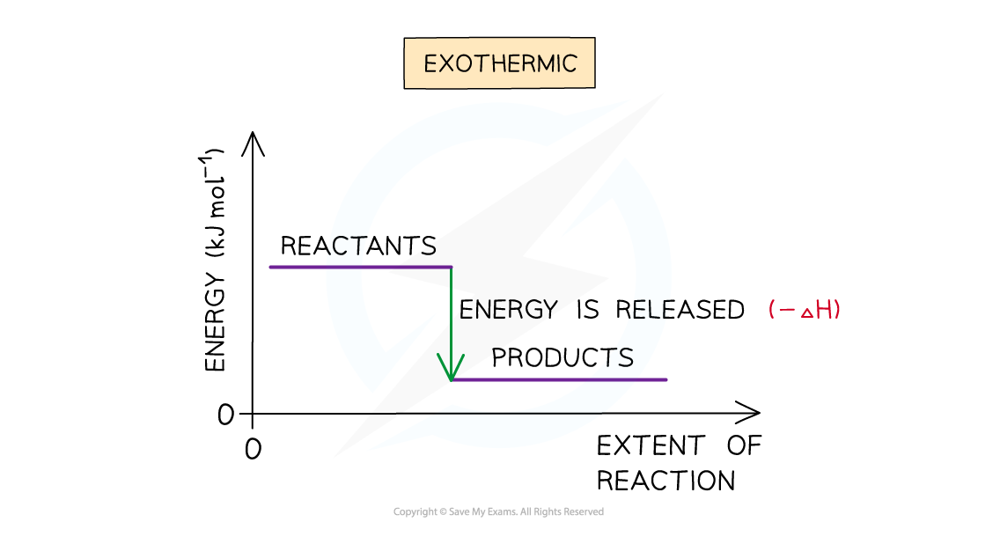
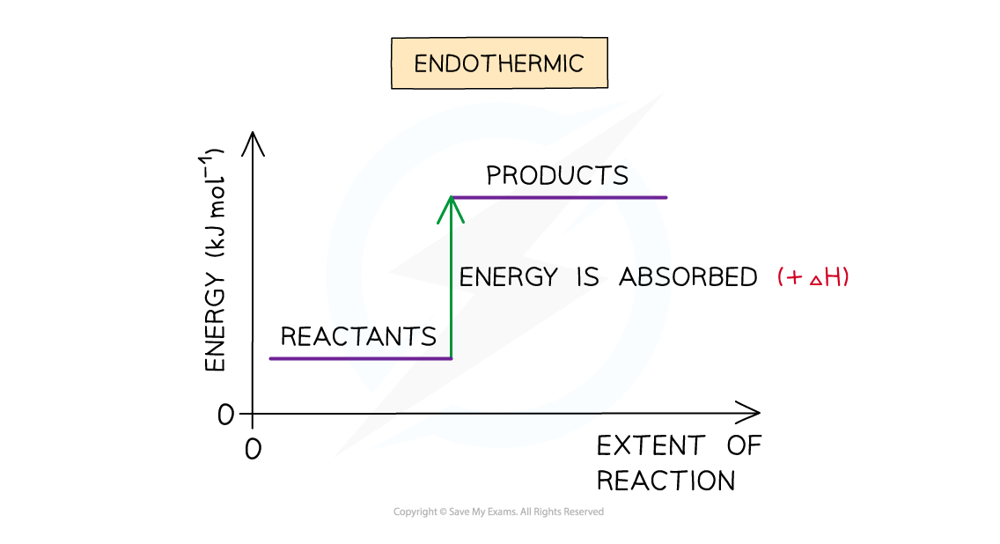
图上 vertical difference 是 ΔH，不是 activation energy。反应的 thermal effect 可通过 surroundings 的 temperature change 观察：exothermic reaction 通常使 solution / surroundings 温度升高；endothermic reaction 通常使其降低。
Reaction profiles and activation energy
Reaction profile 显示 reaction progress 上的 energy change。曲线最高点代表 transition state，从 reactants 到 transition state 的 energy difference 是 activation energy, Eₐ。
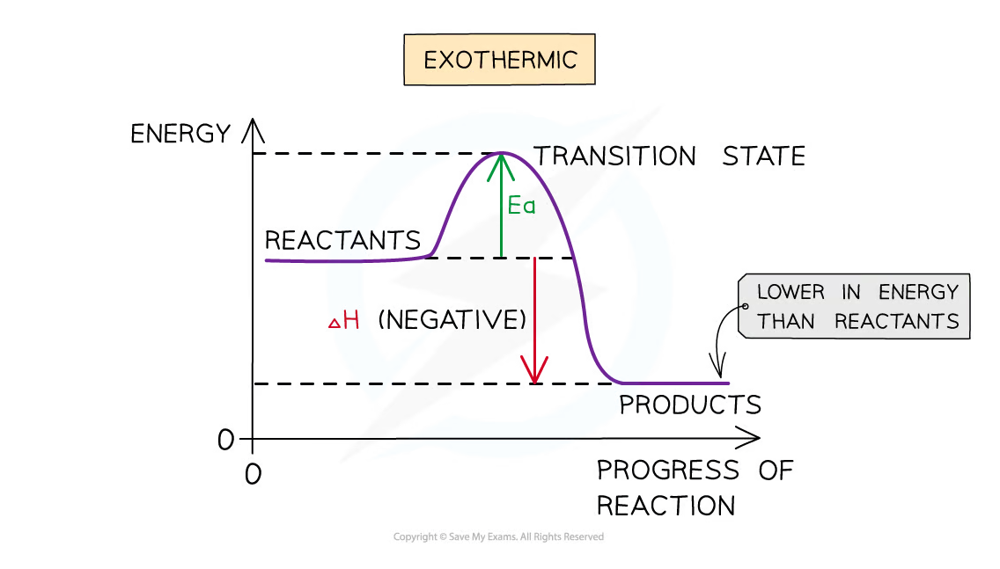
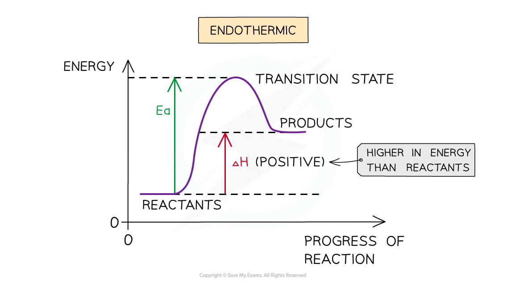
Catalyst 提供 an alternative pathway with a lower Eₐ，但不改变 reactants 与 products 的 enthalpy，因此 catalyst does not change ΔH。
2.1.2 Standard enthalpy changes
Standard conditions and notation
常用 standard conditions 是 298 K、100 kPa，solution concentration 为 1 mol dm⁻³。Equation 必须写 balanced chemical equation，并注明 state symbols：(s)、(l)、(g)、(aq)。
Enthalpy change 的单位通常是 kJ mol⁻¹。符号 ° 表示 measured under standard conditions，例如 ΔᵣH°。
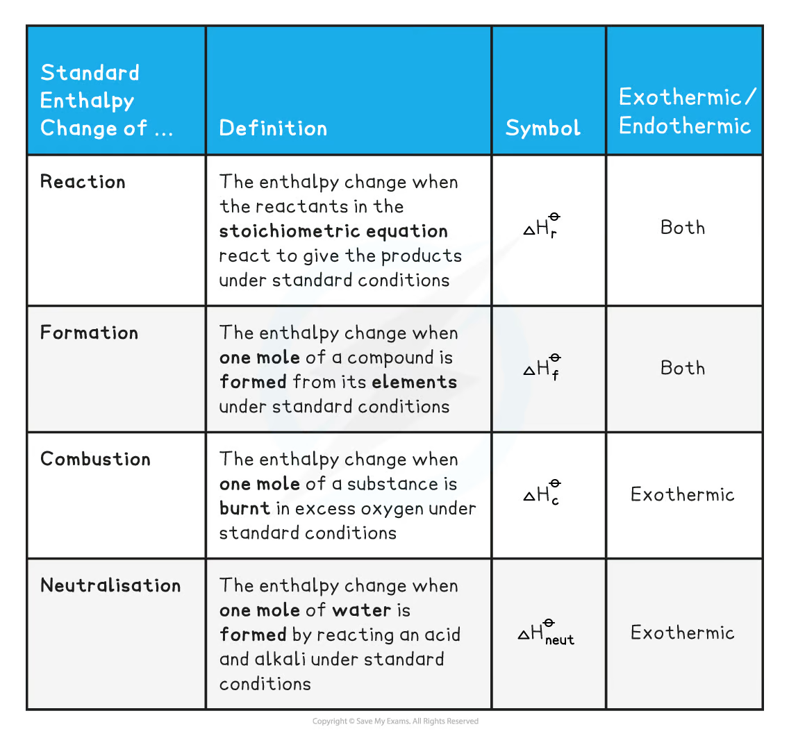
Essential definitions
| Term | Definition | Symbol |
|---|---|---|
| Standard enthalpy change of reaction | enthalpy change when the amounts of reactants shown in the balanced equation react completely under standard conditions | ΔᵣH° |
| Standard enthalpy change of formation | enthalpy change when one mole of a compound is formed from its elements in their standard states | ΔfH° |
| Standard enthalpy change of combustion | enthalpy change when one mole of a substance is completely burned in excess oxygen | ΔcH° |
| Standard enthalpy change of neutralisation | enthalpy change when an acid and an alkali react to form one mole of water under standard conditions | ΔneutH° |
Formation equations 必须从 elements 的 standard states 出发，例如：
\[ \ce{C(s, graphite) + O2(g) -> CO2(g)} \]
Combustion equations 必须写 complete combustion；hydrocarbon 的 products 是 CO₂(g) 和 H₂O(l) under standard conditions。Strong acid / strong alkali neutralisation 的 ionic equation 是：
\[ \ce{H+(aq) + OH-(aq) -> H2O(l)} \]
Sign conventions
Equation direction 改变时，ΔH sign 也改变；equation coefficient 乘以 k 时，ΔH 也乘以 k。不要只看 energy transfer 的文字，要结合 reaction direction 判断正负号。
2.1.3 Using calorimetry
Measuring heat transfer
Calorimetry 用 measured temperature change 估算 reaction heat。常用 apparatus 是 insulated cup、thermometer、lid and stirrer；combustion experiment 则使用 copper can / water bath and spirit burner。
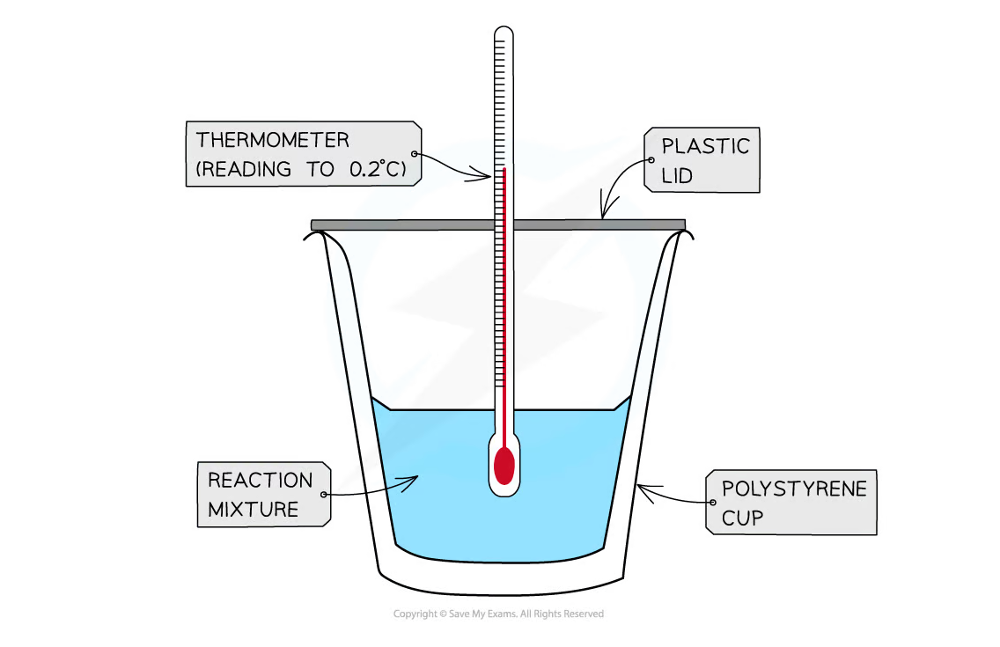
Solution 吸收的 heat：
\[ q = mc\Delta T \]
其中：
q是 heat transferred to the solution，单位J；m是 solution mass，单位g；c是 specific heat capacity，通常取4.18 J g⁻¹ K⁻¹；ΔT是 temperature change，单位K或°C。
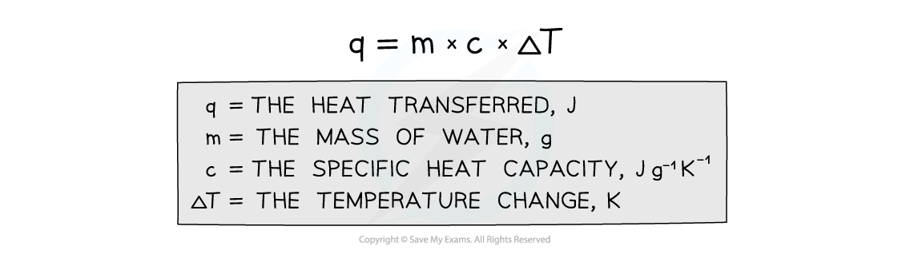
如果 solution temperature rises，reaction is exothermic，reaction enthalpy 为：
\[ \Delta H_{\text{reaction}} = -\frac{q}{n} \]
这里的 n 是 moles of the reacting substance，而不是 solution 的 total moles。最后要把 J 转为 kJ。
Worked example
将 50.0 cm³ acid 与 50.0 cm³ alkali 混合，假设 density 为 1.00 g cm⁻³，temperature rise 为 6.0 °C，实际反应的 amount 为 0.0500 mol：
\[ m = 100.0\ \mathrm{g} \]
\[ q = 100.0\times4.18\times6.0 = 2508\ \mathrm{J}=2.508\ \mathrm{kJ} \]
\[ \Delta H = -\frac{2.508}{0.0500} = -50.2\ \mathrm{kJ\ mol^{-1}} \]
Temperature correction and practical limitations
Reaction mixture 可能在 mixing 之前已经开始升温，或在 maximum temperature 之后向 surroundings 散热。因此可记录 temperature against time，把 cooling section backward extrapolate 到 mixing time，得到 corrected ΔT。

常见 limitations：
- heat loss to the surroundings，使 observed
ΔT偏小； - cup、thermometer 和 lid 也吸收 heat，但 calculation 通常忽略其 heat capacity；
- incomplete combustion 使 measured combustion enthalpy less exothermic；
- evaporation、poor mixing、thermometer resolution 和 inaccurate volume / mass readings 引入 uncertainty。
改进方法包括 use a lid、insulation、stir continuously、record temperature at short intervals、repeat measurements and compare corrected values。
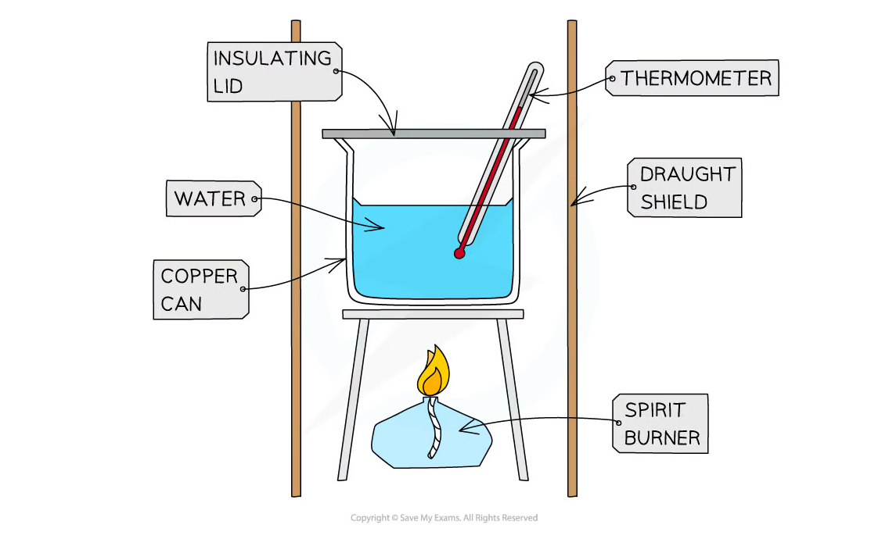
2.1.4 Using Hess’ Law
Principle
Hess’ Law：the enthalpy change for a reaction is independent of the route taken, provided the initial and final conditions are the same。
因此 direct route 与 one or more indirect routes 的 total ΔH 相同：
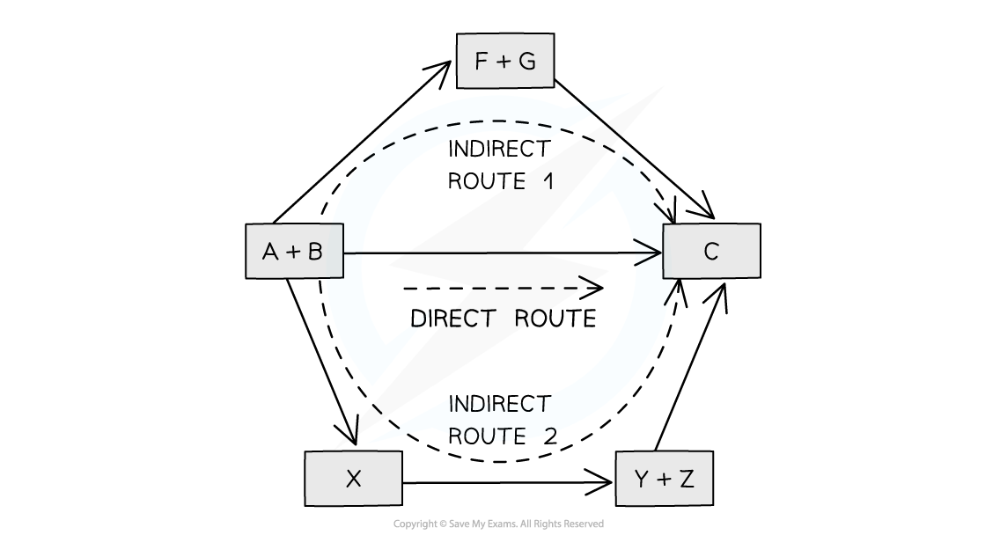
在 calculation 中遵守三个 rules：
- reverse an equation → reverse the sign of
ΔH； - multiply an equation → multiply
ΔHby the same factor； - add equations → add their enthalpy changes。
Formation enthalpy cycle
由 standard enthalpies of formation 计算 reaction enthalpy：
\[ \Delta_{r}H^\circ = \sum \Delta_{f}H^\circ(\text{products}) - \sum \Delta_{f}H^\circ(\text{reactants}) \]
也可以画出 elements 作为 common reference state 的 energy cycle：
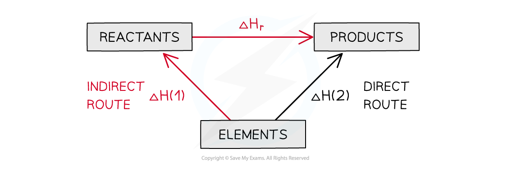
Example: formation-data calculation
对一般 reaction：
\[ \ce{aA + bB -> cC + dD} \]
使用：
\[ \Delta_{r}H^\circ = [c\Delta_{f}H^\circ(\ce{C}) + d\Delta_{f}H^\circ(\ce{D})] - [a\Delta_{f}H^\circ(\ce{A}) + b\Delta_{f}H^\circ(\ce{B})] \]
每个 ΔfH° 必须先乘以 balanced equation 中的 stoichiometric coefficient。Element in its standard state 的 ΔfH° = 0，例如 O₂(g)、H₂(g) 和 C(s, graphite)。
Combustion enthalpy cycle
当 data 给出 standard enthalpies of combustion，可把 reactants 和 products 都 complete combust 到相同的 CO₂(g)、H₂O(l) 等 final products：
\[ \Delta_{r}H^\circ = \sum \Delta_{c}H^\circ(\text{reactants}) - \sum \Delta_{c}H^\circ(\text{products}) \]
最安全的方法是画 cycle，标出箭头方向；不要机械套公式而忘记 sign。Source 中的 data table 和 completed cycle 可用于检查 coefficient：
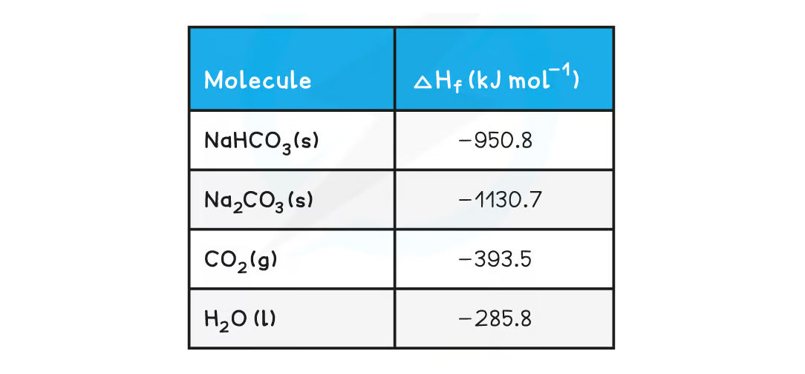
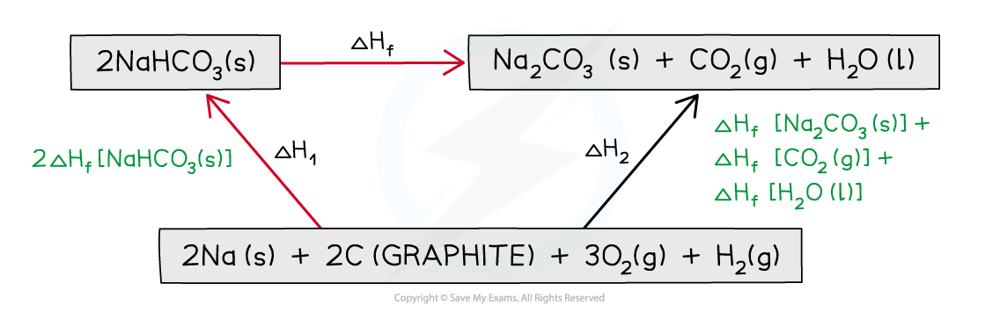
2.1.5 Bond enthalpies
Definition and sign
Average bond enthalpy 是 breaking one mole of a specified covalent bond in gaseous molecules，forming separate gaseous atoms 所需的 average enthalpy change。
- bond breaking is endothermic：energy is required；
- bond making is exothermic：energy is released。
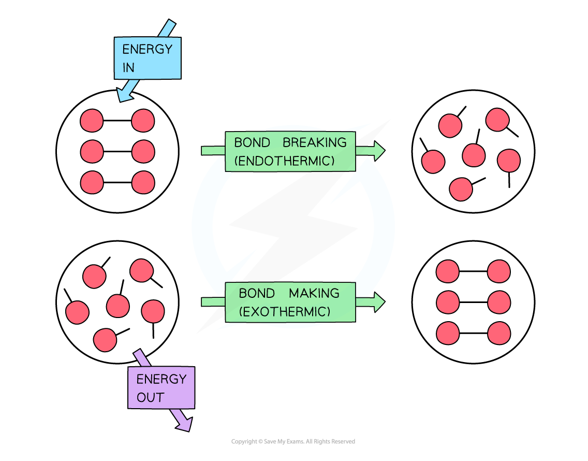
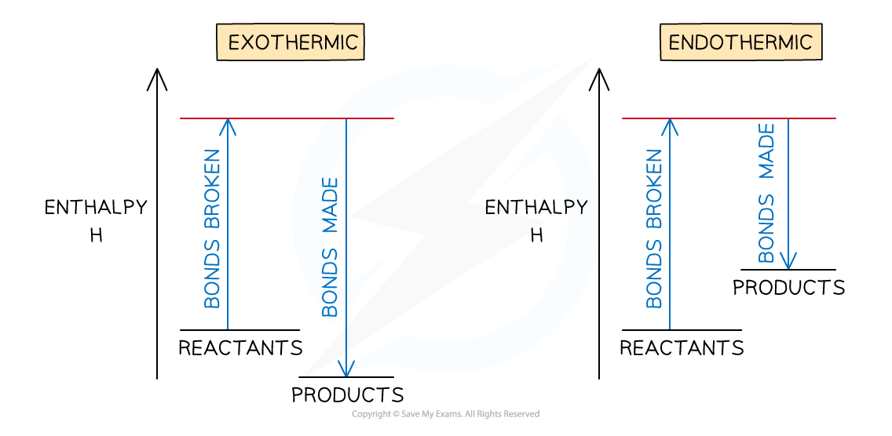
Calculation method
对于 gaseous reaction：
\[ \Delta H \approx \sum(\text{bond enthalpies broken}) - \sum(\text{bond enthalpies formed}) \]
步骤：
- draw structural formulae of all reactants and products；
- count every bond broken in reactants；
- count every bond formed in products；
- substitute data and calculate
broken − formed。
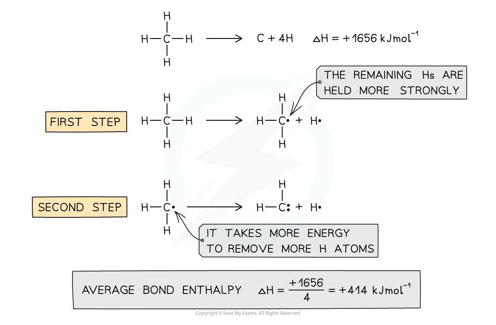
Worked example
For：
\[ \ce{H2(g) + Cl2(g) -> 2HCl(g)} \]
Using H-H = 436、Cl-Cl = 242 and H-Cl = 431 kJ mol⁻¹：
\[ \Delta H \approx (436+242)-2(431) = -184\ \mathrm{kJ\ mol^{-1}} \]
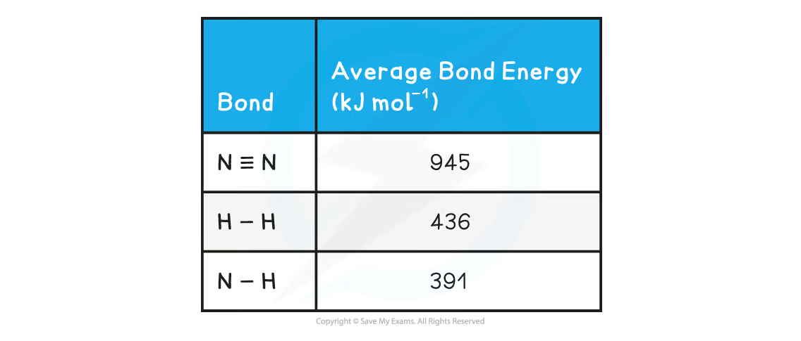
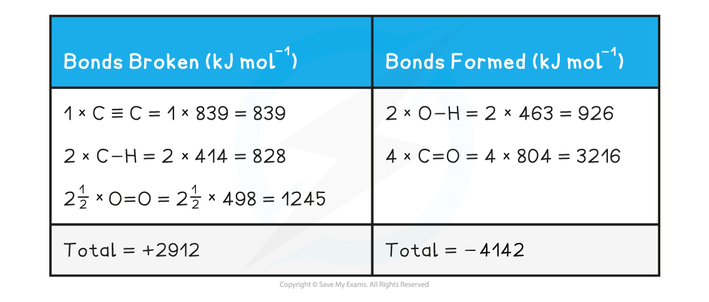
结果用 ≈，因为 average bond enthalpies 是 measured averages，且通常指 gaseous molecules；同一种 bond 在不同 molecular environments 中的 actual enthalpy 可能不同。因此 bond enthalpy method 通常不如 Hess cycle using exact formation data accurate。
Exam checklist
Source note
本页内容来自项目内的 Note per Chapter/Note per Chapter/2.1 Energetics.pdf.pdf，并按 International-A-Level-Chemistry-Spec 的 energetics learning outcomes 组织。页面中的 diagrams 已从 PDF 内嵌对象独立提取，统一处理为清晰的 white-background PNG，存放在 assets/notes/2-1-energetics/。